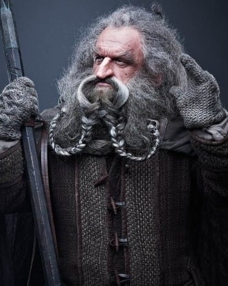

Overview
The Dwarves are a proud and formidable race created by Aulë the Smith. Renowned for their skill in mining, metalwork, and warcraft, they value loyalty, honor, and lineage. Though not numerous, they have altered the course of Middle-earth's history through key battles, resilient strongholds, and legendary individuals.
Strongholds
- Khazad-dûm (Moria) – The original and greatest Dwarven kingdom. Abandoned due to the Balrog's awakening.

- Erebor (The Lonely Mountain) – A mighty mountain fortress reclaimed from Smaug. Symbol of Dwarven resurgence.
- Iron Hills – A militarized stronghold ruled by Dáin Ironfoot. Key to the victory at the Battle of the Five Armies.
- Blue Mountains (Ered Luin) – Home to many exiled Dwarves after Erebor's fall. Base of Thorin's Company before the quest.
Major Battles
-
Battle of Azanulbizar (2799 TA)
Part of the War of the Dwarves and Orcs. Fought at the East-gate of Moria. Though victorious, the Dwarves suffered heavy casualties. Thorin earned the name "Oakenshield" in this battle.
-
Battle of the Five Armies (2941 TA)
Following the death of Smaug, Thranduil led an Elven host to Erebor to claim part of the treasure. The Elves initially attempted to take Erebor by force before Dáin Ironfoot and the Iron Hills reinforcements arrived. Bard and the Men of Lake-town joined the Elves in this demand. Orcs and Wargs from Mount Gundabad and the northern wastes then descended upon the mountain. The Free Peoples united against this common enemy. Thorin, Kíli, and Fíli led a desperate charge but were slain. Dáin took command and secured victory.

-
Defense of Erebor (War of the Ring)
Easterling armies assaulted Erebor and Dale during Sauron’s final campaign. Dáin Ironfoot and King Brand of Dale fell in battle, but their sons Thorin III and Bard II held the stronghold until Sauron’s fall.
-
Skirmishes in Moria (2989–2994 TA)
Balin led an expedition to reclaim Moria but was killed in ambush. The colony was overrun by Orcs. The remnants of this failed attempt were discovered by the Fellowship decades later.

Notable Dwarves
-
Durin I – Founder of Khazad-dûm. Said to return in each new generation of great Dwarven kings.
-
Thorin Oakenshield – Leader of the Quest of Erebor. Slain by Azog in the Battle of the Five Armies after redeeming himself in battle.

-
Dáin Ironfoot – Cousin of Thorin. Became King under the Mountain. Fell in the defense of Erebor during the War of the Ring.
-
Balin – Later attempted to reclaim Moria. Slain by Orcs. His tomb was discovered by the Fellowship.
-
Gimli – Son of Glóin. Member of the Fellowship. Fought at Helm’s Deep and Pelennor Fields. Later became Lord of the Glittering Caves.

-
Fíli – Nephew of Thorin. Killed while protecting his uncle at the Battle of the Five Armies.
-
Kíli – Nephew of Thorin. Died defending Tauriel and Thorin during the battle.

-
Glóin – Father of Gimli. Survived Erebor’s reclamation and lived through the War of the Ring.
-
Óin – Died in Moria during Balin’s expedition.
 -
Dwalin – Renowned warrior. Fought at Azanulbizar and the Battle of the Five Armies. Fate after the War is unrecorded but presumed to have died of old age.
-
Bifur – Survived the Battle of the Five Armies. Retired in Erebor.
-
Bofur – Lively and good-natured. Survived and remained in Erebor.
-
Bombur – The heaviest of the company. Survived but became so fat he required six young Dwarves to lift him from bed.
-
Nori – Survived the quest. Returned to Erebor.
-
Dori – Survived. Known for carrying Bilbo during tough spots. Resided in Erebor post-battle.
-
Ori – Killed in Moria with Balin’s expedition.